M01 · 홈 · 첫 화면
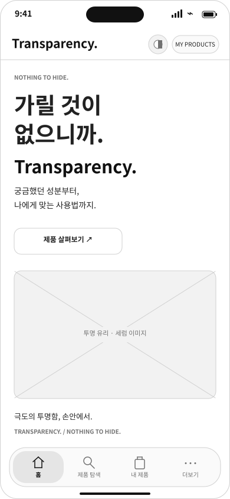
앱 시작 화면. 아래로 스크롤하면 브랜드 원칙과 제품 순서가 이어집니다.
SVG 다운로드 ↓2026.11.03 현재 앱 기준 · 26개 모바일 화면·상태 · 5개 플로우차트. 최근 추가한 제형 전환, 리뷰 집계, Gemini 질문, 구매 입력 흐름을 함께 반영했습니다.
figma-plugin/manifest.json을 선택합니다.ZIP 자체는 .fig 파일이 아닙니다. 와이어프레임은 편집 가능한 프레임·텍스트·도형으로 생성되며, 흐름도는 SVG 벡터입니다. SVG 파일을 직접 캔버스에 드래그하는 방법도 지원합니다.

앱 시작 화면. 아래로 스크롤하면 브랜드 원칙과 제품 순서가 이어집니다.
SVG 다운로드 ↓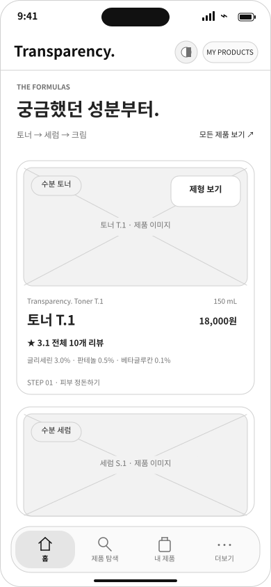
홈 제품 영역의 T.1 전체 카드와 S.1 시작 부분. 스크롤 순서는 T.1 → S.1 → C.1입니다.
SVG 다운로드 ↓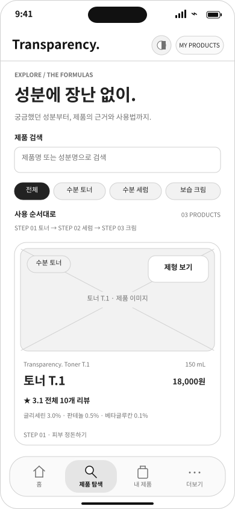
모바일 세로 카드 목록의 첫 제품 T.1. 아래로 S.1·C.1이 이어지며 별점은 각 제품 리뷰 기준입니다.
SVG 다운로드 ↓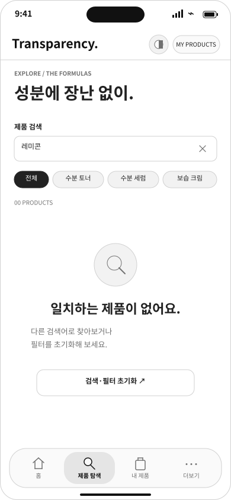
입력어 ‘레미콘’에 일치하는 제품이 없는 상태. 검색·필터 초기화로 목록을 복구합니다.
SVG 다운로드 ↓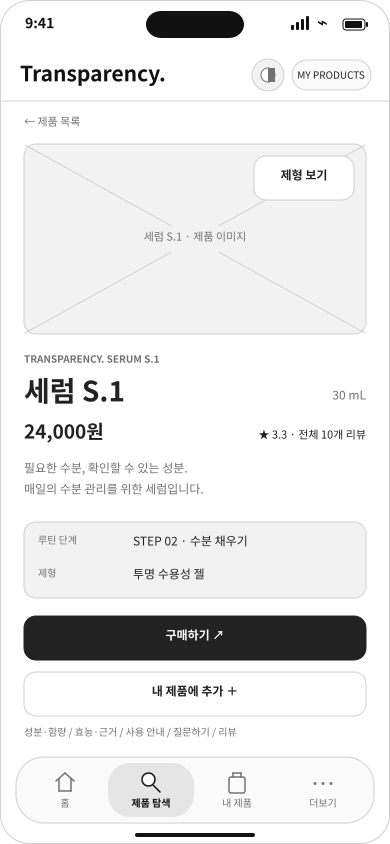
제품 탐색에서 S.1 선택. 상세 첫 영역이며 아래에 성분·함량 탭과 QR 정보가 이어집니다.
SVG 다운로드 ↓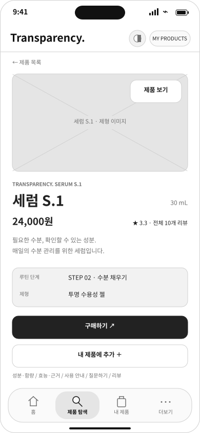
M05에서 ‘제형 보기’ 선택. 같은 제품·같은 주소에서 대표 이미지가 제형으로 전환됩니다.
SVG 다운로드 ↓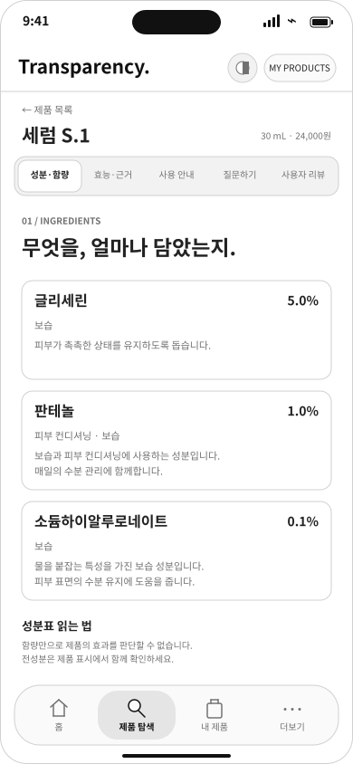
세럼 S.1 상세에서 성분·함량 영역까지 스크롤. 주요 성분 3개와 각 역할을 확인합니다.
SVG 다운로드 ↓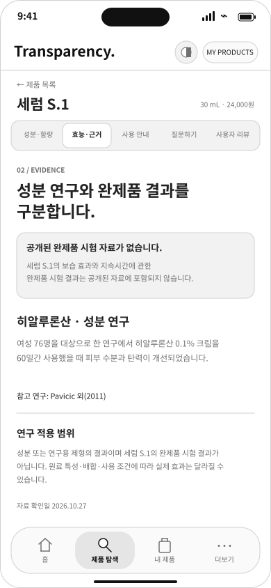
세럼 S.1 효능·근거 탭. 성분 연구와 공개되지 않은 완제품 결과를 구분합니다.
SVG 다운로드 ↓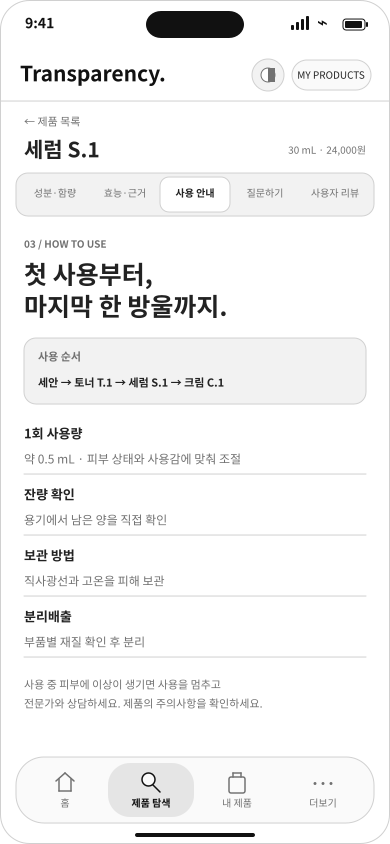
세럼 S.1 사용 안내 탭. 사용 순서·약 0.5 mL·잔량 확인·보관·분리배출 안내입니다.
SVG 다운로드 ↓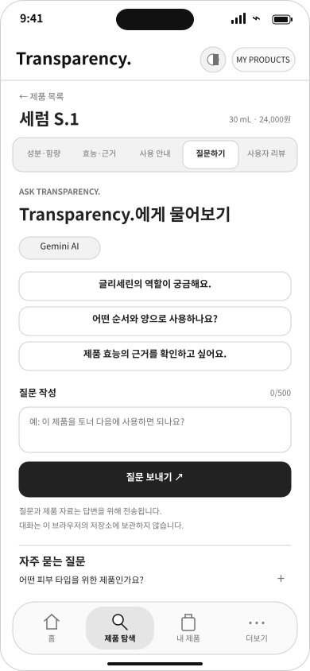
질문하기 초기 상태의 입력·FAQ 구성. 추천 질문 3개와 500자 입력, 아래쪽 FAQ가 이어집니다.
SVG 다운로드 ↓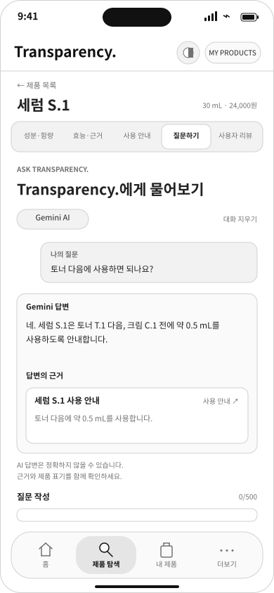
Gemini 연결 성공 상태의 답변 영역. 근거는 실제 정보 탭으로 연결되며 다음 질문 입력란이 아래에 이어집니다.
SVG 다운로드 ↓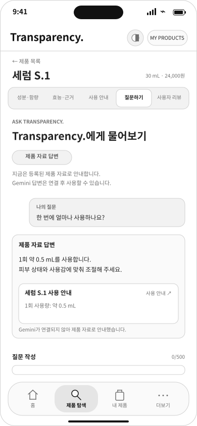
Gemini 미연결 시 제품 자료를 안내한 상태. AI로 표현하지 않으며 다음 질문 입력란이 아래에 이어집니다.
SVG 다운로드 ↓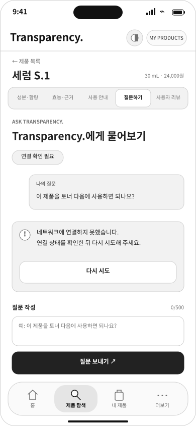
네트워크 연결 실패. 전송한 질문은 대화에 남고 입력란은 비워지며 ‘다시 시도’로 같은 질문을 재요청합니다.
SVG 다운로드 ↓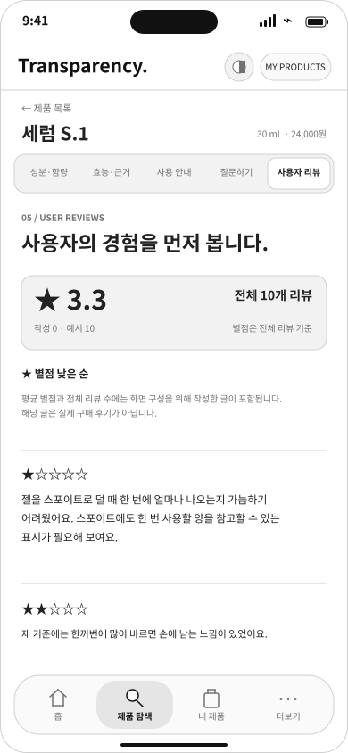
S.1의 리뷰만 별점 낮은 순으로 표시. 준비된 10개 리뷰도 전체 수와 평균 별점에 포함됩니다.
SVG 다운로드 ↓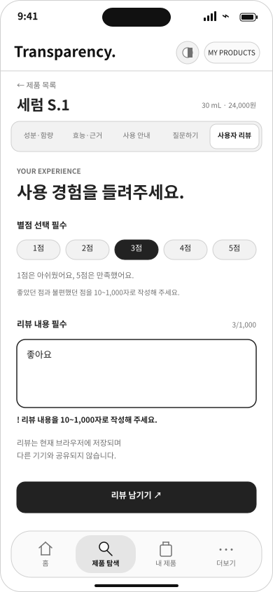
리뷰 작성 영역까지 스크롤. 3점을 선택하고 ‘좋아요’만 제출하여 내용 길이 오류가 표시된 상태입니다.
SVG 다운로드 ↓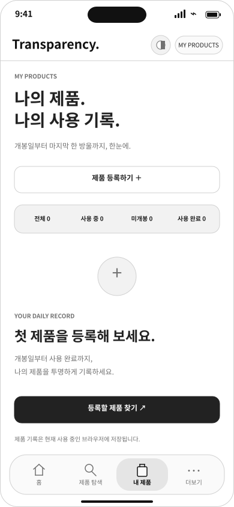
제품 등록 전. 등록하기는 제품 탐색으로 이동하며 별도의 가입 또는 등록 입력 화면은 없습니다.
SVG 다운로드 ↓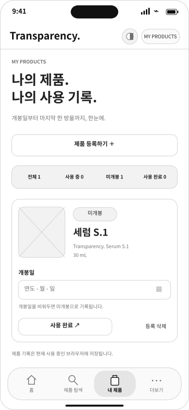
제품 상세의 ‘내 제품에 추가’를 누르면 즉시 등록. 개봉일이 비어 있으면 미개봉입니다.
SVG 다운로드 ↓통합 목록의 개봉일 입력란에서 2026-11-03 입력. 날짜가 있으면 ‘사용 중’으로 표시됩니다.
SVG 다운로드 ↓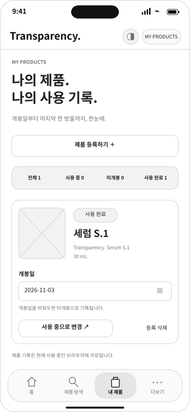
같은 목록에서 ‘사용 완료’ 실행. 별도 완료 탭 없이 상태와 되돌리기 버튼이 바뀝니다.
SVG 다운로드 ↓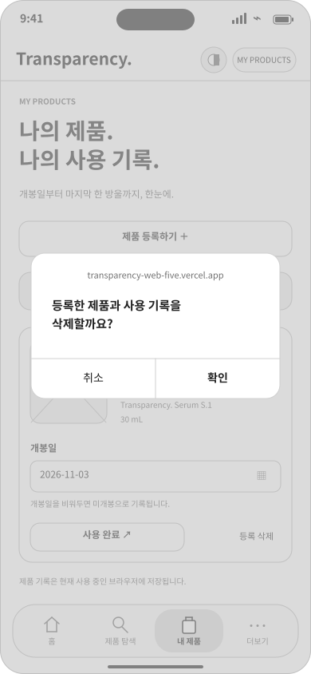
‘등록 삭제’ 클릭 후 브라우저의 기본 확인 대화상자. 운영체제·브라우저에 따라 외형이 달라집니다.
SVG 다운로드 ↓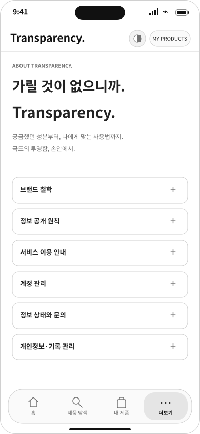
더보기의 실제 6개 아코디언. 각 항목은 현재 화면 안에서 열리며 별도 법률·계정 페이지는 없습니다.
SVG 다운로드 ↓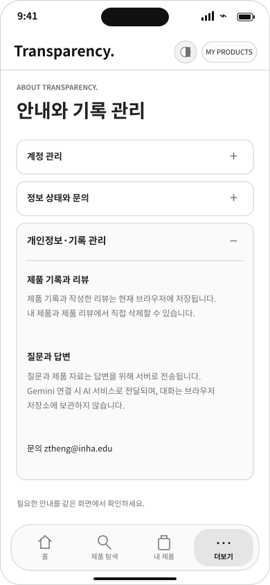
‘개인정보·기록 관리’ 아코디언을 연 뒤 해당 영역까지 스크롤한 상태입니다.
SVG 다운로드 ↓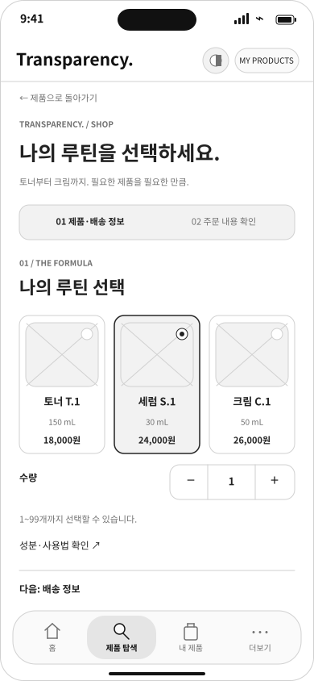
구매 페이지 첫 단계. 하나의 제품을 선택하고 수량 1~99개를 정합니다. 실제 결제는 없습니다.
SVG 다운로드 ↓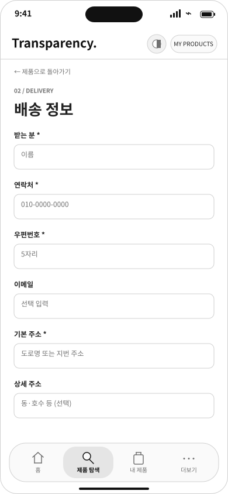
배송 정보 영역으로 스크롤. 모바일 1열 입력이며 상세 주소 아래에 배송 요청사항·입력 보관 안내가 이어집니다.
SVG 다운로드 ↓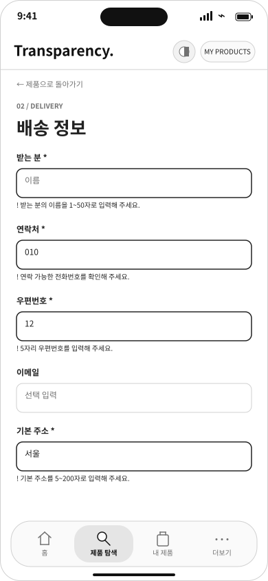
주문 내용 확인 시 필수 입력 오류. 모바일 1열 필드 순서를 유지하며 나머지 입력과 확인 버튼은 아래에 이어집니다.
SVG 다운로드 ↓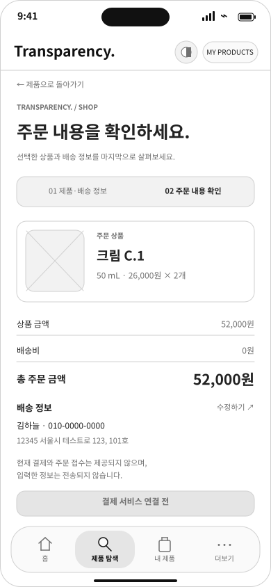
크림 C.1 2개 선택, 상품 52,000원·배송 0원. 검토 화면이며 결제와 주문 접수는 제공되지 않습니다.
SVG 다운로드 ↓홈·제품 탐색·내 제품·더보기와 외부 QR 상세 진입, 구매 화면의 연결을 보여줍니다.
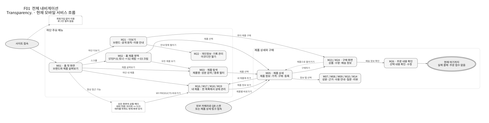
SVG ↓ Mermaid 원본 ↓검색·필터·검색 결과 없음, 제형 이미지 전환과 제품 상세의 다섯 정보 탭 흐름입니다.
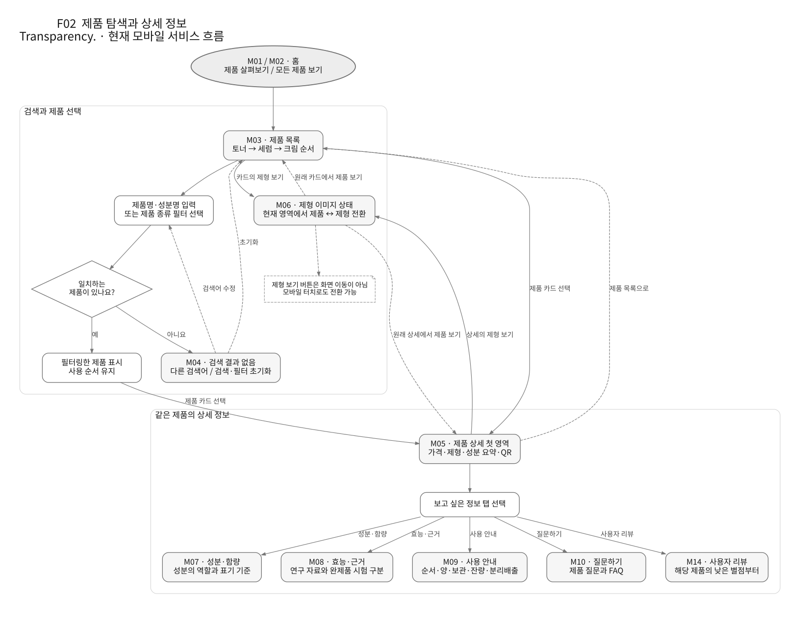
SVG ↓ Mermaid 원본 ↓제품별 리뷰 작성·오류·저장·집계와 내 제품의 미개봉·사용 중·완료·삭제를 실제 한 목록 구조로 나타냅니다.
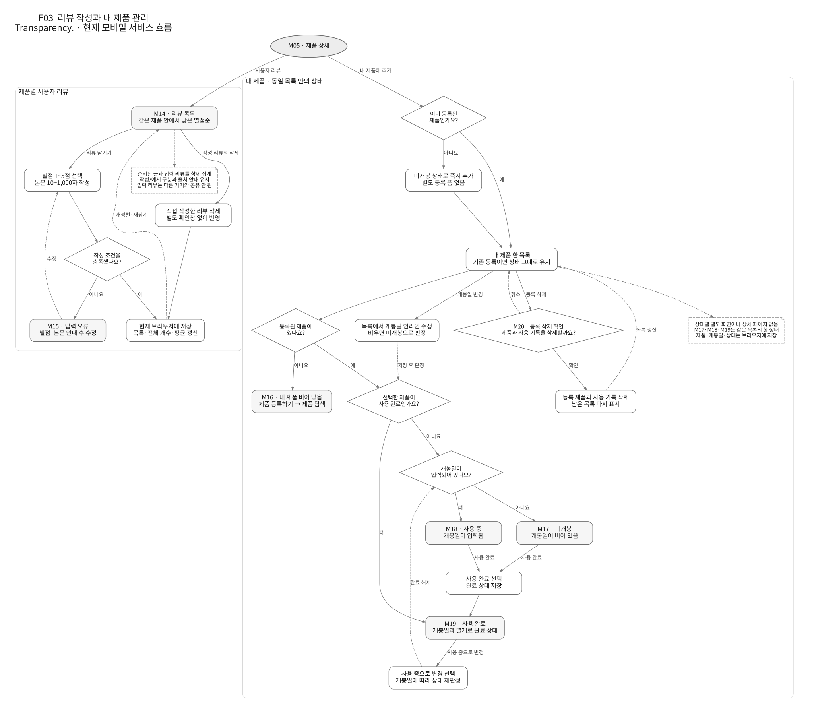
SVG ↓ Mermaid 원본 ↓질문 입력·검증·취소, Gemini 또는 제품 자료 답변, 오류 재시도와 근거 화면 이동을 구분합니다.
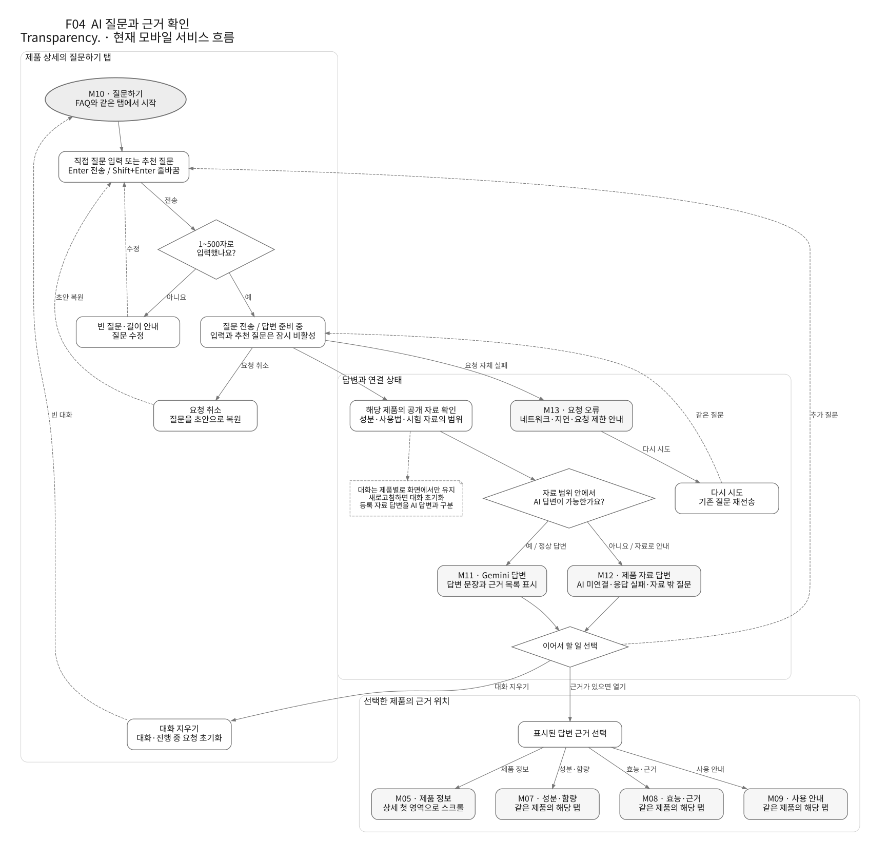
SVG ↓ Mermaid 원본 ↓상품·수량·배송 정보, 배송비 계산, 입력 오류와 수정 후 주문 내용 확인까지의 구매 흐름입니다. 실제 결제는 포함하지 않습니다.
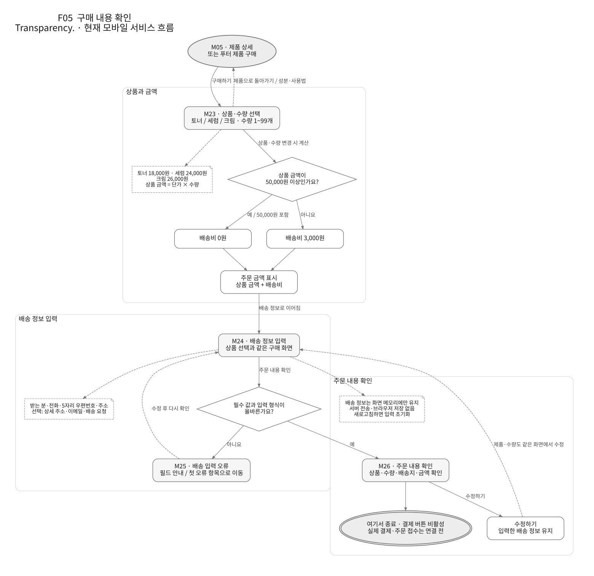
SVG ↓ Mermaid 원본 ↓